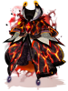
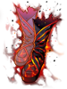
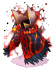
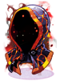
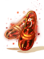

Magma Dungeon F3
Jump to navigation
Jump to search
Nogg Road F3 is the third floor of the well-known Magma Dungeon.
It's considered an end game dungeon, requiring anyone that wishes to enter to be at least level 175. Being in a party and having appropriate equipment is also recommended.
Besides being a good leveling place, it's possible to obtain new cards and the new Lava Leather Sets.
Access
After obtaining at least level 175, there're two ways to access the dungeon:
- Via the earlier floor, Magma Dungeon F2, as shown on the minimap on the right.
- Using the Warper NPC, selecting Dungeons and then Magma Dungeon F3.
Monsters
| Image | Name | Level | HP | Size / Race / Element |
|---|---|---|---|---|
| Rigid Blazer | 178 | 1,522,580 | Medium / Demon / Neutral 2 | |
| Rigid Nightmare | 179 | 1,523,377 | Large / Demon / Dark 3 | |
| Rigid Deleter | 174 | 1,486,915 | Medium / Dragon / Neutral 2 | |
| Rigid Deleter | 173 | 1,478,369 | Medium / Dragon / Neutral 2 | |
| Rigid Explosion | 171 | 1,457,859 | Small / Beast / Neutral 2 | |
| Rigid Kaho | 173 | 1,473,468 | Medium / Formless / Dark 2 | |
| Rigid Lava Golem | 177 | 1,529,661 | Large / Formless / Neutral 2 | |
Rigid Muspellskoll
|
188 | 48,530,254 | Medium / Demon / Fire 3 |
Obtainable Equipment
As mentioned in the release patch notes, currently Lava Leather gears do not have their intended enchants, pending implementation.
The following drops are considered party drops:
- Monster(s) show them when you use @mi, if it isn't a MVP, right after their normal drops.
- When you use @wd for them, if it isn't a MVP, you will have a warn about them.
- Items are rolled individually per party member.
- Equipment will drop pre-identified.
- Any type of Bubble gum will not affect the drop rate of these items.
| Image | Name | Slot | Description |
|---|---|---|---|

|
Lava Leather Armor [1] | Armor |
|
|  | Lava Leather Manteau [1] | Garment |
|
|  | Lava Leather Boots [1] | Footgear |
|

|
Lava Leather Suit [1] | Armor |
|
|  | Lava Leather Muffler [1] | Garment |
|

|
Lava Leather Shoes [1] | Footgear |
|

|
Lava Leather Robe [1] | Armor |
|
|  | Lava Leather Hood [1] | Garment |
|
|  | Lava Leather Sandals [1] | Footgear |
|


Cards
| Card | Type | Description |
|---|---|---|
| Shield Card |
| |
| Footgear Card |
| |
| Headgear Card |
| |
| Headgear Card |
| |
| Shield Card |
| |
| Weapon Card |
| |
| Weapon Card |
|